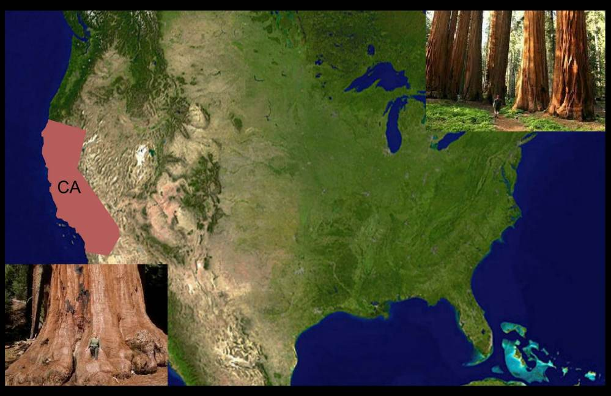
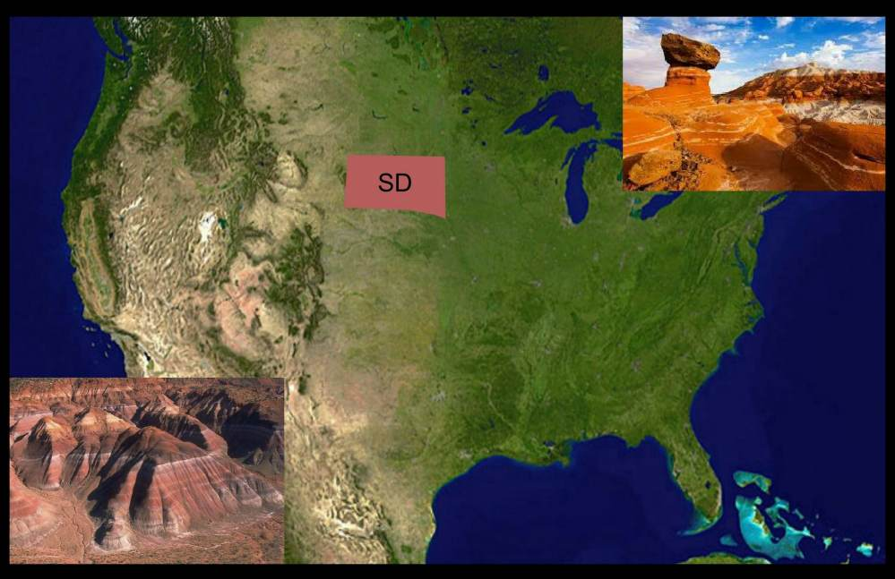

The National Park Service was created by an Act signed by President Woodrow Wilson on August 25, 1916. The national park system comprises 401 areas covering more than 84 million acres. Let's see if you can find some of these wonderful parks.
Giant Sequoia National Park
This landscape testifies to nature's size, beauty, and diversity - huge mountains, rugged foothills, deep canyons, vast caverns, and the world's largest trees.This park lies side-by-side with Kings Canyon National Park in the southern Sierra Nevada, east of the San Joaquin Valley. Visitor activities vary by season and elevation (1,370 to 14,494 feet).
Question 1 of 5
Where is this National Park?
CaliforniaGiant Sequoia National Park
This landscape testifies to nature's size, beauty, and diversity - huge mountains, rugged foothills, deep canyons, vast caverns, and the world's largest trees.This park lies side-by-side with Kings Canyon National Park in the southern Sierra Nevada, east of the San Joaquin Valley. Visitor activities vary by season and elevation (1,370 to 14,494 feet).
Question 1 of 5
Yellowstone National Park
It's a wonderland. Old Faithful and the majority of the world's geysers are preserved here. They are the main reason the park was established in 1872 as America's first national park—an idea that spread worldwide. A mountain wildland, home to grizzly bears, wolves, and herds of bison and elk, the park is the core of one of the last, nearly intact, natural ecosystems in the Earth’s temperate zone.
Question 2 of 5
Where is this National Park?
WyomingYellowstone National Park

It's a wonderland. Old Faithful and the majority of the world's geysers are preserved here. They are the main reason the park was established in 1872 as America's first national park—an idea that spread worldwide. A mountain wildland, home to grizzly bears, wolves, and herds of bison and elk, the park is the core of one of the last, nearly intact, natural ecosystems in the Earth’s temperate zone.
Question 2 of 5
Badlands National Park
The rugged beauty of this park draws visitors from around the world. These striking geologic deposits contain one of the world’s richest fossil beds. Ancient mammals such as the rhino, horse, and saber-toothed cat once roamed here. The park’s 244,000 acres protect an expanse of mixed-grass prairie where bison, bighorn sheep, prairie dogs, and black-footed ferrets live today.
Question 3 of 5
Where is this National Park?
South DakotaBadlands National Park
The rugged beauty of this park draws visitors from around the world. These striking geologic deposits contain one of the world’s richest fossil beds. Ancient mammals such as the rhino, horse, and saber-toothed cat once roamed here. The park’s 244,000 acres protect an expanse of mixed-grass prairie where bison, bighorn sheep, prairie dogs, and black-footed ferrets live today.
Question 3 of 5
Battle of Saratoga National Historic Park
Here in the autumn of 1777, American forces met, defeated and forced a major British army to surrender. This crucial American victory in the battle at this park renewed patriots’ hopes for independence, secured essential foreign recognition and support, and forever changed the face of the world.
Question 4 of 5
Where is this National Park?
New YorkBattle of Saratoga National Historic Park

Here in the autumn of 1777, American forces met, defeated and forced a major British army to surrender. This crucial American victory in the battle at this park renewed patriots’ hopes for independence, secured essential foreign recognition and support, and forever changed the face of the world.
Question 4 of 5
Cape Hatteras National Seashore
The sound of ocean waves, the starry night sky, or the calm of the salt marshes, you can experience it all. Shaped by the forces of water, wind, and storms these islands are ever changing. The plants, wildlife, and people who live here adapt continually. Whether you are walking on the beach, kayaking on the sound, or climbing the Cape Hatteras Lighthouse there is something for everyone to explore!
Question 5 of 5
Where is this National Park?
North CarolinaCape Hatteras National Seashore

The sound of ocean waves, the starry night sky, or the calm of the salt marshes, you can experience it all. Shaped by the forces of water, wind, and storms these islands are ever changing. The plants, wildlife, and people who live here adapt continually. Whether you are walking on the beach, kayaking on the sound, or climbing the Cape Hatteras Lighthouse there is something for everyone to explore!
Question 5 of 5